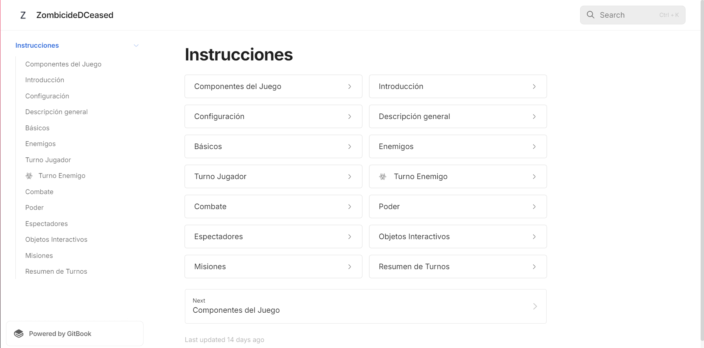

Manual ZombieDCeased
En el proyecto del manual de ZombieDceased, lideré la creación del repositorio en GitHub y la sincronización con GitBook para que mi equipo pudiera trabajar de forma colaborativa. Mi responsabilidad fue describir los componentes del juego y su configuración inicial. Cada miembro del equipo hizo un fork del repositorio y contribuyó con diferentes secciones del manual, creando pull requests para revisar y fusionar los cambios. Usamos este flujo para asegurarnos de que el contenido estuviera siempre actualizado y revisado antes de integrarlo, facilitando una colaboración ordenada y eficiente.